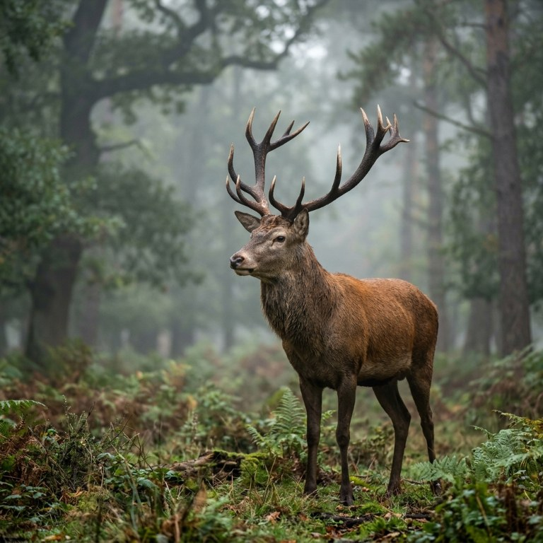

🐾 世界の生きもの
動物ごとに、生息する国々をめぐります。

アカシカ
Red deer / 哺乳類
LC・軽度懸念
📖 説明
アカシカはヨーロッパ、西アジア、北アフリカに広く分布する大型のシカ類で、4室の胃を持つ反芻動物である。オスは毎年生え変わる立派な角を持ち、顕著な性的二型を示す。IUCNでは軽度懸念に分類されており、多くの地域で個体数は安定または回復傾向にある。
🌍 生息国(4か国)


出典: https://en.wikipedia.org/wiki/Red_deer(2026-08-31時点)